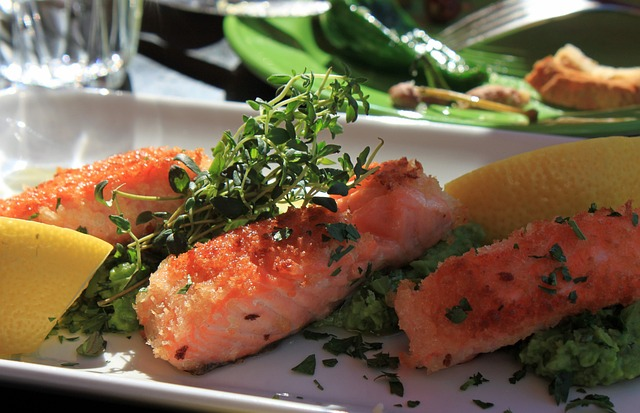
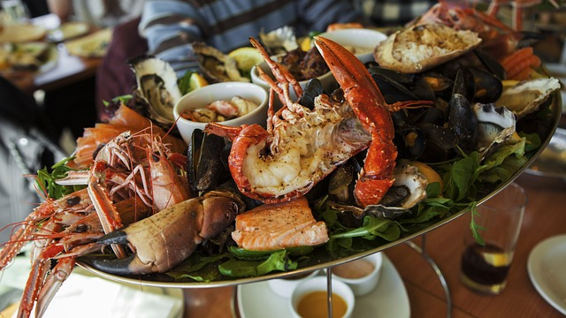
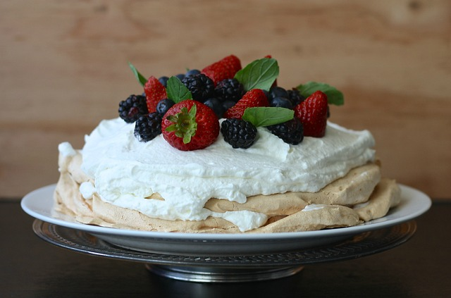
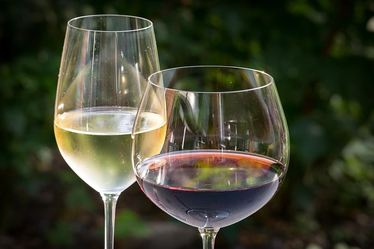

Our Menu
Appetizers
- Rewena Bread - Traditional Māori bread. $10
- Paua Fritter - Finely diced pieces of paua, served with a side salad and horopito dressing. $16
- Raw Fish - Dried snapper fish marinated in coconut cream, served with tomatoes and spring onions. $20
- Poached Salmon - Salmon poached in an orange and pistachio glaze, served with rewena bread. $22
- Seafood Basket - Crumbed mussels, salt and pepper squid, crumbed hoki bites and garlic prawns. $25
Main
- Fish of the Day - Beer-battered fish and kumara fries, served with a side salad and homemade tartare. $25
- Mussels and Scallops - Steamed mussel & scallop mousse, honey and soy broth. $25
- Seafood Chowder - Creamy chowder filled with tarakihi, prawn, hoki, scallops and mussels, served with flatbread. $30
- Pork Belly - Slow-cooked pork belly served on a bed of apple slaw with roasted kumara and crispy noodles. $30
- Lamb Steak - New Zealand lamb coated in a kawakawa crumb, served with Dijon-mustard-glazed carrots, roasted butternut squash and mushroom jus. $33
- Venison - Venison crusted with Horopito, served with glazed plums, cabbage salad and red wine jus. $33
Dessert
- Kapiti Ice Cream - Check for daily specials. $10
- Steamed Pudding - Golden-syrup-flavoured steamed pudding, served with vanilla ice cream. $12
- Mini Pavlova - Mini pavlova, served with kawakawa and lemon-infused cream and fresh fruit. $16
- Banoffee Pie - Toffee, fresh bananas and fresh cream. $16
Beverages
Red B/G
- Terrace Edge Pinot Noir, 2012, Wairarapa $53/13
- Altitude Pinot Noir, 2010, Marlborough $64/15
- Greystone Pinot Noir, 2012, Wairarapa $73/17
- Terrace Edge, Syrah, 2012, Wairarapa $53/13
- Altitude Syrah, 2010, Marlborough $64/15
- Greystone Syrah, 2012, Wairarapa $73/17
- Pegasus Bay Merlot, 2013, Waipara $65/14
- Pegasus Bay Pinot Noir, 2013, Waipara $110
White
- Spade Oak Pinot Gris, 2011, Gisborne $40/10
- Maude Pinot Gris, 2017, Otago $49.50/11
- Charles Wiffen Chardonnay, 2013, Otago $48/11
- Amisfield, Riesling, 2016, Otago $53/12
- Lamont Riesling, 2010, Otago $57/13
- Elephant Hill Viognier, 2013, Hawke’s Bay $55/12
- Folium Sauvignon Blanc, 2011, Marlborough $52/11
- Billecart-Salmon Brut Reserve, France $120
Beer and Cider
- Garage project range $11
- Tuatara range $11
- Panhead range $10
- Coopers ale $10
- Heineken $11
- Moa cider $10
- Crooked cider $10
Non-Alcoholic
- Mineral water $4.00
- Soft drinks $4.00
- Juice $4.00
- Coffee $4.50
- Tea $3.50